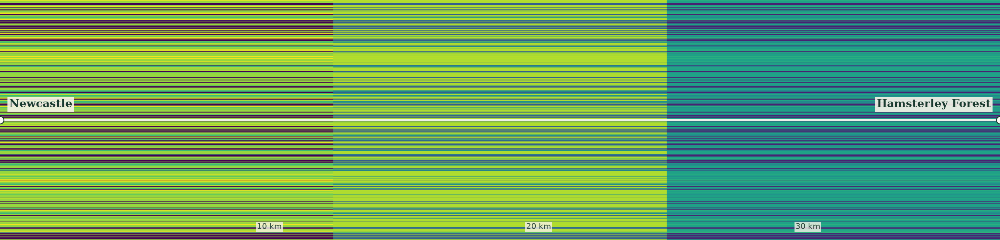

01 / The landscape
Newcastle to Hamsterley Forest

02 / The measurement
Not a boundary.
A gradient.
At regular intervals along the line, we counted the classified land-cover pixels within a 500 m circle. Each colour below is a measured percentage, not an invented curve.
Move along the chart to see how the mixture changes. A field can give way to a village, then to woods, without ever crossing a neat urban–rural border.
Loading precomputed data from the project repository…
The method
Measured, not imagined.
The source is ESA WorldCover 2021 v200, a satellite land-cover classification. It has been sampled onto a 40 m grid for this map. Along the straight line between Newcastle city centre and Hamsterley Forest, the chart uses 85 measured locations and counts classified cells within 500 m of each location. Values are intentionally not smoothed.
Colours are grouped into built-up, trees, cropland, grass/shrub and other classified land cover. The transect is a rotated 8 km wide strip so the full journey can be read left to right. These figures don't tell us who lives in a place, whether land is accessible, or whether a place is officially urban or rural.